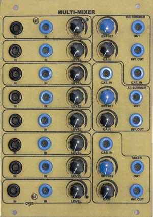

|
This module is a multi-purpose mixer that can be used for both synth-level audio and control voltages. There are eight input channels, each which has AC coupled and DC coupled inputs and a level control. The AC inputs are primarily for audio use, but can be used to remove any DC offset from a control voltage. Only the fast moving portions of the control voltage will be passed. The eight inputs are then mixed into three different types of output stage.
A little on how it works:
The schematic of the Multi-Mixer. The Multi-Mixer is basically an array of inverting summers. Inputs are buffered (and inverted) by the op-amp on each input stage. The outputs of these buffers are fed to three mixing buses. The AC summer and DC summer busses are then fed to their summer stages, where they are also re-inverted. The inverted output is provided by an extra inverting buffer. The resistive mixer bus is buffered by a voltage follower before being fed to a two op-amp output stage identical to the others. It is this voltage follower that prevents the output stage from summing the voltages on this bus. Note: DC Mixer. If you don't reqire this channel, simply leave out all associated parts. These are the resistors marked RC that are connected to the mixer bus, and the buffer amplifier marked "mixer 1" on the PCB. If you do want to add an odd mix, just to fill the panel holes, connect the output of the DC Summer (OU) via a 200k to inverting input of the mixer buffer TL072 (Pin 2) and install every second mixer bus resistor marked RC. These will inputs will now subtract from the output total instead of adding to it.
Construction
Before you start assembly, check the board for etching faults. Look for any shorts between tracks, or open circuits due to over etching. Take this opportunity to sand the edges of the board if needed, removing any splinters or rough edges. When you are happy with the printed circuit board, construction can proceed as normal, starting with the resistors first, followed by the IC sockets if used, then moving onto the taller components. Take particular care with the orientation of the polarized components, such as electrolytics, diodes, transistors and ICs. When inserting the ICs in their sockets, take care not to accidentally bend any of the pins under the chip. Also, make sure the notch on the chip is aligned with the notch marked on the PCB overlay. If you are planning to use this for audio mixing, the DC offset pots should be omitted. If you are planning to drive the mixer to saturation, it may be wise to substitute op-amps that do not suffer from phase-inversion when their common mode range is exceeded.
Resistor identificationMost resistors are shown on the board as identifiers. The values given here are recommended values. Resistors sharing the same functions in each channel share the same identifier, making it easy to substitute different values if required. In the default configuration, most of these resistors are 100k.
If you wish to achieve greater than unity gain, reduce the values of RC and RD.
Pad identificationEach channel has its connections grouped on the PCB. Each output stage has its connections grouped on the PCB. To distinguish between each group, look on the PCB for the corresponding label.
Set UpThere should be no setup required. Depending on the quality and tolerance of the pots used, you may find that you do not have unity gain with a pot set to its maximum position. This can be corrected by tweaking the values of other resistors in the circuit. The easiest solution is to pre-test your pots and select suitable ones. Notes:
Parts list This is a guide only. Parts needed will vary with individual constructor's needs. If anyone is interested in buying these boards, please check the PCBs for Sale page to see if I have any in stock. Can't find the parts? See the parts FAQ to see if I've already answered the question. Also see the CGS Synth discussion group.

Article, art & design copyright 2010 by Ken Stone
| |||||||||||||||||||||||||||||||||||||||||||||||||||||||||||||||||||||||||||||||||||||||||||||